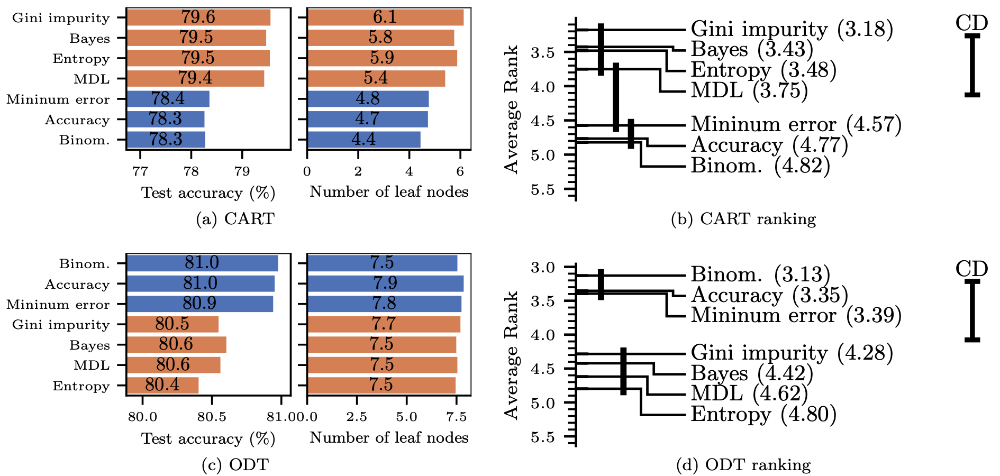
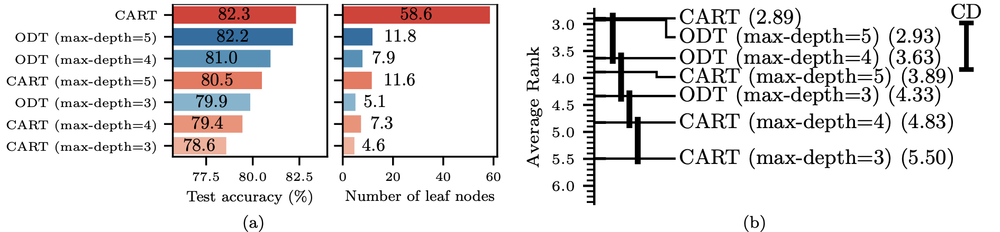

- 同じ深さなら +1.3〜1.7 ポイント109 個のデータでの、ODT と CART の平均テスト精度の差（深さ 3、4、5 でそれぞれ 1.3、1.6、1.7 ポイント）。どの深さでも差は統計的に有意だった。
- CART は 5 倍大きな木で追いつく深さを制限しない CART の平均テスト精度は最も高かったが、深さ 5 の ODT をわずかに上回るだけで、そのために 5 倍大きな木を使った。
- ODT は Gini より正解率CART では Gini 不純度やエントロピーのような凹な目的関数が正解率より良かったが、ODT では逆に、正解率を直接最適化するほうが有意に良かった。
最適な決定木が貪欲な木より正確かどうかについて、先行研究の結論は食い違っていた
CART や C4.5 は Gini 不純度や情報利得を分岐ごとに局所的に最適化して、木を上から作る。最適な決定木（ODT）は大きさの制限のもとで訓練データでの目的関数を木全体で最適化する。動的計画法などの進歩で、ODT は数十万件のデータでも求められるようになった。そこで論文は、それまで計算が追いつかずに確かめられなかった、ODT についての 5 つの未解決の問いを調べる。
- 問い 1：Gini 不純度や情報利得のような従来の目的関数を最適化すると、どうなるか。
- 問い 2：ハイパーパラメータの調整方法は ODT にどう影響するか。
- 問い 3：ODT は貪欲な木より正確か。
- 問い 4：データが増えると、両者の差は小さくなるか。
- 問い 5：ODT は貪欲な木より過学習しやすいか。
問い 3 では、Bertsimas と Dunn（2017）が「ODT は CART より平均で 1〜2% 精度が高い」と報告し、GOSDT や MurTree の論文も同様の結果を示した。一方、Zharmagambetov ら（2021）や Sullivan ら（2024）は ODT のほうが悪い結果を報告し、「最適」と呼べるのかを疑った。論文は先行研究の実験設定を調べ、食い違いの主な原因は CART を ODT と同じ深さに制限したかどうかだと結論づける。先行研究の多くでは、ODT か CART のどちらか、あるいは両方が正しく調整されておらず、データや木も小さかった。
OpenML の 109 個の二値分類のデータと合成データで、両者を同じ二値化と調整の手順のもとで比べる
ODT には動的計画法の STreeD を使い、分岐の数を 5 分割交差検証で調整した。数値の特徴量は 10 分位のしきい値で、カテゴリの特徴量は one-hot 符号化で二値にし、CART も同じ二値化したデータで学習して、探索の仕方の違いだけを比べた（数値のまま比べた場合も付録で同様の結果だった）。CART は付録で整理した推奨の手順に従い、コスト複雑度で調整した。
実データは OpenML から、特徴量 50 個以下（数値は 8 個以下）、欠損なし、250〜100,000 件の二値分類のデータをすべて選んだ 109 個である。合成データでは、ランダムに作った深さ 3 の木（または線形の分離面）でラベルを付け、例の数、特徴量の数、特徴量とクラスのノイズを変えた。比較には各データでのテスト精度の平均順位を使い、Nemenyi の臨界差検定（\(\alpha = 0.05\)）で有意差を判定した。
貪欲法には Gini 不純度のような凹な目的関数が要るが、ODT では正解率を直接最適化するほうが有意に良い
深さ 4 で、正解率と、貪欲法でよく使われる 6 つの目的関数（Gini 不純度、エントロピー、最小誤差、C4.5 の二項分布による悲観的な誤差、最小記述長、ベイズの事後確率）を比べた。各目的関数は葉の例の数 \(n\) と誤分類の数 \(m\) から葉の値 \(f(n, m)\) を返す関数として書ける。たとえば正解率は \(f(n, m) = m\)、Gini 不純度は \(f(n, m) = n(1 - p_0^2 - p_1^2)\) である。
CART では、Gini 不純度やエントロピーのような強い意味で凹な目的関数が、正解率などの凹でない目的関数より有意に良かった。上から作る貪欲法には強い意味で凹な目的関数が必要だという既知の事実と合う。ODT では逆に、凹な目的関数のほうが有意に悪かった（図1）。論文は、Gini 不純度やエントロピーの凹性は本来必要な性質ではなく、貪欲法の制約から来ていると述べる。ODT は目的関数を自由に選べるので、費用を考慮した分類や公平性の制約のように良い分岐基準が見つかっていない問題でも、目的そのものを直接最適化できる。

ODT では大きさの調整が欠かせないが、どの方法で調整してもテスト精度はほとんど変わらない
深さ 5 の ODT で、深さ、分岐の数、コスト複雑度、葉の最小データ数、ラプラス平滑化の 5 つの調整方法を、試す設定の数を 10 にそろえて比べた。どの方法の間にも統計的に有意な差はなく、調整しない場合だけが劣った。ただし、葉の最小データ数や深さの調整では分岐の数を直接制約しないので木がやや大きくなり、深さだけを調整するのが群を抜いて速かった。論文は精度と計算時間を重視するなら深さを、木の大きさと精度を重視するなら分岐の数かコスト複雑度を調整するよう勧めている。
同じ深さなら ODT は CART より 1〜2 ポイント正確で、大きさと誤りのつり合いでも ODT が有意に優れていた
109 個のデータで、深さ 3、4、5 の ODT と CART を比べると、どの深さでも ODT のテスト精度が有意に高く、差は平均で 1.3、1.6、1.7 ポイントだった（図2）。これは Bertsimas と Dunn の主張に合う。ただし、深さを制限しない CART の平均テスト精度が最も高く、深さ 5 の ODT をわずかに上回った。そのために CART は 5 倍大きな木を使っていた。論文は Bertsimas と Dunn の主張に「同じ深さの制限のもとで」という条件を付けるべきだとしている。
そこで論文は ODT の利点を精度そのものではなく、同じ大きさの制約のもとでの精度とみなし、それを測る指標として大きさと誤りの曲線の下の面積（SE-AUC）を導入した。葉の数を 1 から \(s\) まで変えたときのテスト誤りの、パレートフロントでの平均である。
葉 1〜16 枚の木で比べると、深さ 4 の ODT は深さを制限しない CART より SE-AUC が有意に小さかった。ODT の目的関数のうちベイズの事後確率だけは、CART との差が有意でなかった。

データが増えても両者の差は縮まらず、調整した ODT は CART よりノイズに強かった
深さ 3 の木から作った合成データでは、1,000 件未満では ODT が深さを制限した CART よりも制限しない CART よりも正確だった。1,000 件を超えるとどちらもテスト精度 100% になったが、CART は葉 11 枚を使い、ODT は真の木と同じ 8 枚で済んだ。深さ 4 に制限した CART は、真の深さが 3 なのに、データを増やしても精度が約 98% で頭打ちになった。特徴量を増やすと CART は不要な分岐を増やして精度が下がったが、ODT は変わらなかった。大きな実データ（Electricity、Covertype、Higgs）でも、調整した ODT は深さを制限した CART より一貫して正確だった。深さを制限しない CART はデータとともに精度を上げたが、木も数万の節点まで大きくなった。たとえば Electricity の 1 万件では、精度はほぼ同じでも、ODT の葉は 8 枚、CART の葉は 100 枚を超えた。論文はこれらの結果から、データが増えると差が縮まるという仮説を否定している。
過学習については、調整しない ODT は、データが少ないと深さを制限した CART より過学習しやすかった。しかし調整すると、特徴量やクラスにノイズを加えた合成データで、ODT はつねに CART より精度が高く、木も小さかった。論文は、ODT が貪欲な木より過学習しやすいという懸念を否定している。
計算時間の目安として、STreeD は深さ 4 までの木なら、10 万件で二値の特徴量約 250 個、100 万件で約 150 個まで実用的に求められた。
ODT は小さくて正確な木が欲しいときに向いており、比較するときは深さの制限と調整をそろえる必要がある
- ODT が向く場面：解釈できる小さな木が欲しいとき、意味のある少数の特徴量に整えたデータ、例の数が多いデータ、ノイズの多いデータ、良い分岐基準のない目的関数を直接最適化したいとき。
- ODT の限界：大きな木（深さ 5 を超えるもの）と特徴量の多いデータはまだ難しい。特徴量の選択や前処理が助けになる。
- 比較の勧め：大きさの制限ありとなしの両方で比べること、大小のデータで比べること、深さ 2 より大きな木も評価すること、ODT と貪欲法の両方を正しく調整すること。
- この文献リストとの関係：DL8、GOSDT、MurTree などの比較の仕方を見直し、動的計画法の系統の ODT がどんな条件で役に立つかを整理した論文である。
@article{linden2026optimal,
title = {Optimal or Greedy Decision Trees? Revisiting their Objectives, Tuning, and Performance},
author = {van der Linden, Jacobus G. M. and Vos, Dani{\"e}l and de Weerdt, Mathijs and Verwer, Sicco and Demirovi{\'c}, Emir},
journal = {Transactions on Machine Learning Research},
issn = {2835-8856},
year = {2026},
url = {https://openreview.net/forum?id=DvDOAtskXl}
}
ページの数値と図は arXiv 2409.12788 v3（2026 年 8 月 6 日、TMLR 掲載版と同じ体裁）による。書誌は OpenReview の BibTeX で確認した（著者名の表記 Mathijs de Weerdt も OpenReview に合わせた）。